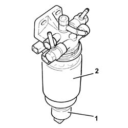

1044B20 fuel filter filtering element - replace
- Path
- Procedures > 10 ENGINE > 1044 FUEL CIRCUIT PUMP/AND DEVICES > 1044B fuel filters > 1044B20 fuel filter filtering element - replace
- Kind
- repair procedure (removal / refitting; the operation number is the code)
- Applies to
- all engines; all production periods
- Interactive page
- https://sloeber94.github.io/elrnDB-fDbl/en/#/2584485
Applies to: all engines; all production periods
 Removing
Removing
 Refitting
RefittingProceed with the removal 1044B10 fuel filter assembly - r + r or replace .
1. At the bench, undo and remove the diesel filter water presence sensor.
2. Undo and remove the fuel filer's filter element using a suitable tool.

Applies to: all engines; all production periods
Refitting
RemovingFit a new filter element on the fuel filter and tighten it fully by hand.
Refit the diesel filter water presence sensor in its seating and tighten it by hand, until the gasket comes into contact with the fuel filter, then tighten by a further 1/4 turn.
Proceed with the refitting 1044B10 fuel filter assembly - r + r or replace .
Topics linked from this page (1)
Topics that link to this page (12)
- D10 ENGINE IDLE IRREGULAR
- D21 ENGINE CUTS OUT WHILST DRIVING
- 0010K20 20,000km service coupon, emission control version
- 0010K40 40,000km service coupon, emission control versions
- 0010K60 60,000km service coupon - emission control versions
- 0010K80 80,000km service coupon - emission control versions
- 0010M01 100,000km service coupon, emission control versions
- 0010M20 120,000km service coupon, emission control versions
- 0010M21 120000 km service coupon for emission control versions with air conditioner
- 0010M40 140,000km service coupon - emission control versions
- 0010M60 160,000km service coupon - emission control versions
- 0010M80 180,000km service coupon - emission control versions